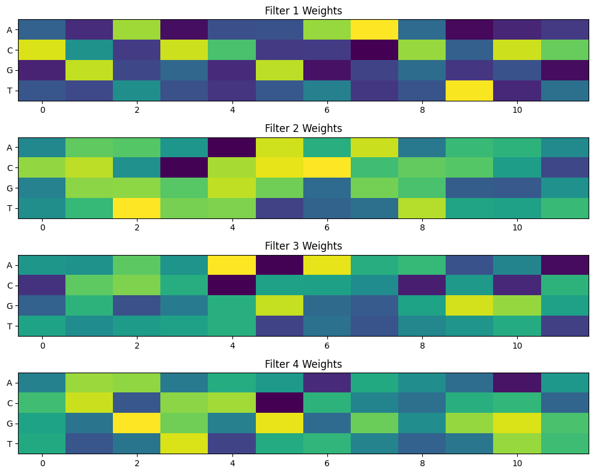
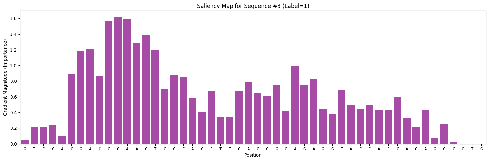

这份教程是基于 Nature Genetics, 2018 的论文 “A Primer on Deep Learning in Genomics” 的补充材料编写的。我们将一步步看如何利用深度学习来解决基因组学中的一个经典问题：发现DNA中的转录因子结合位点。
虽然原教程使用的是 Keras/TensorFlow，但为了适应现代深度学习的趋势，这里使用 PyTorch 框架进行重写和讲解。
0. 背景知识
什么是转录因子结合位点？
在生物学中，转录因子（Transcription Factor, TF）是一种蛋白质，它们能够结合到DNA的特定区域，从而控制基因的表达（即基因是否被“开启”或“关闭”）。这些特定的DNA区域被称为转录因子结合位点（Binding Sites）。
我们的任务
我们希望训练一个神经网络模型，让它通过观察一段DNA序列，自动判断这段序列是否包含某个特定的转录因子结合位点。
- 输入 (Input): 一段长度为 50 个碱基对 (bp) 的 DNA 序列（由 A, C, G, T 组成）。
- 输出 (Output): 一个二分类标签（0 或 1）。
1: 表示该序列与蛋白结合（包含结合位点）。0: 表示该序列不与蛋白结合（不含结合位点）。
数据集
为了方便学习，我们将使用一个模拟数据集。
- 每个序列长度固定为 50。
- 实际上，包含结合位点的序列里藏着一个特定的模式（Motif）：
CGACCGAACTCC。 - 我们的神经网络在训练前并不知道这个 Motif 是什么，它需要自己去“学习”并发现这个规律。
1. 环境准备
首先，我们需要导入必要的 Python 库。我们将使用 numpy 和 pandas 处理数据，使用 sklearn 进行数据预处理，使用 torch 构建和训练模型。
import numpy as np
import pandas as pd
import requests
import matplotlib.pyplot as plt
from sklearn.preprocessing import LabelEncoder, OneHotEncoder
from sklearn.model_selection import train_test_split
from sklearn.metrics import confusion_matrix, accuracy_score
import torch
import torch.nn as nn
import torch.optim as optim
from torch.utils.data import DataLoader, TensorDataset
import torch.nn.functional as F
# 设置随机种子，保证结果可复现
torch.manual_seed(42)
np.random.seed(42)2. 数据准备与预处理 (Data Curation)
2.1 加载数据
数据托管在 GitHub 上，我们可以直接通过 URL 读取。
# 定义数据 URL
SEQUENCES_URL = 'https://raw.githubusercontent.com/abidlabs/deep-learning-genomics-primer/master/sequences.txt'
LABELS_URL = 'https://raw.githubusercontent.com/abidlabs/deep-learning-genomics-primer/master/labels.txt'
# 加载序列数据
print("正在下载序列数据...")
sequences = requests.get(SEQUENCES_URL).text.split('\n')
sequences = list(filter(None, sequences)) # 移除可能的空行
# 加载标签数据
print("正在下载标签数据...")
labels = requests.get(LABELS_URL).text.split('\n')
labels = list(filter(None, labels)) # 移除可能的空行
# 查看一下数据量
print(f"总共有 {len(sequences)} 条序列，{len(labels)} 个标签。")
# 查看第一条数据示例
print(f"示例序列: {sequences[0]}")
print(f"示例标签: {labels[0]}")
# 正在下载序列数据...
# 正在下载标签数据...
# 总共有 2000 条序列，2000 个标签。
# 示例序列: CCGAGGGCTATGGTTTGGAAGTTAGAACCCTGGGGCTTCTCGCGGACACC
# 示例标签: 02.2 One-Hot 编码 (独热编码)
神经网络无法直接理解 “ACGT” 这样的字符。我们需要将 DNA 序列转化为数字矩阵。最常用的方法是 One-Hot Encoding。
对于 DNA 的 4 个碱基，我们可以这样表示：
- A:
[1, 0, 0, 0] - C:
[0, 1, 0, 0] - G:
[0, 0, 1, 0] - T:
[0, 0, 0, 1]
如果一段序列长度为 (这里是 50)，那么它就会变成一个 的矩阵。
# 1. LabelEncoder: 将字符 (A, C, G, T) 转换为整数 (0, 1, 2, 3)
integer_encoder = LabelEncoder()
# 2. OneHotEncoder: 将整数转换为 One-Hot 向量
one_hot_encoder = OneHotEncoder(categories='auto')
input_features = []
print("正在进行 One-Hot 编码...")
for sequence in sequences:
# 将字符串转为整数列表
integer_encoded = integer_encoder.fit_transform(list(sequence))
integer_encoded = np.array(integer_encoded).reshape(-1, 1)
# 将整数转为 One-Hot 矩阵
one_hot_encoded = one_hot_encoder.fit_transform(integer_encoded)
input_features.append(one_hot_encoded.toarray())
# 堆叠成一个大的 numpy 数组
# 最终形状应该是 (样本数, 序列长度, 4)
input_features = np.stack(input_features)
print(f"输入特征的形状: {input_features.shape}")
# 正在进行 One-Hot 编码...
# 输入特征的形状: (2000, 50, 4)同样地，我们也需要处理标签。虽然标签已经是 0 和 1，但为了规范，我们也可以将其转化为 numpy 数组。
labels = np.array(labels).astype(np.float32).reshape(-1, 1)
print(f"标签形状: {labels.shape}")
# 标签形状: (2000, 1)2.3 划分数据集
我们将数据分为 训练集 (Training Set) 和 测试集 (Test Set)。训练集用于训练模型，测试集用于评估模型在未见过的数据上的表现。
# 划分比例：75% 训练，25% 测试
X_train, X_test, y_train, y_test = train_test_split(
input_features, labels, test_size=0.25, random_state=42
)
print(f"训练集大小: {X_train.shape}")
print(f"测试集大小: {X_test.shape}")
# 训练集大小: (1500, 50, 4)
# 测试集大小: (500, 50, 4)2.4 转换为 PyTorch Tensor
PyTorch 需要特定的数据格式：
- 数据类型: 通常使用
float32。 - 维度顺序: PyTorch 的一维卷积层 (
Conv1d) 要求的输入形状是 (Batch_Size, Channels, Length)。- 我们要把
(N, 50, 4)转换为(N, 4, 50)。这很重要！
- 我们要把
# 转换为 Tensor 并调整维度 (Permute)
X_train_t = torch.tensor(X_train, dtype=torch.float32).permute(0, 2, 1)
X_test_t = torch.tensor(X_test, dtype=torch.float32).permute(0, 2, 1)
y_train_t = torch.tensor(y_train, dtype=torch.float32)
y_test_t = torch.tensor(y_test, dtype=torch.float32)
# 创建 DataLoader，用于批量加载数据
train_dataset = TensorDataset(X_train_t, y_train_t)
test_dataset = TensorDataset(X_test_t, y_test_t)
# 批量大小 (Batch Size) 设为 32
train_loader = DataLoader(train_dataset, batch_size=32, shuffle=True)
test_loader = DataLoader(test_dataset, batch_size=32, shuffle=False)
print("数据准备完成！")
3. 构建模型 (Model Architecture)
我们将构建一个简单的一维卷积神经网络 (1D CNN)。这在基因组学中非常常用，因为卷积核 (Kernel/Filter) 可以被看作是用来扫描 DNA 序列的“探针”，专门寻找特定的 Motif。
模型结构设计
- Conv1d 层:
- Filters (卷积核数量): 32。这意味着我们训练 32 个不同的“探针”来寻找特征。
- Kernel Size (卷积核大小): 12。每个探针长度为 12 个碱基（对应我们要找的 Motif 长度约为 12）。
- Input Channels: 4 (对应 A, C, G, T)。
- ReLU 激活函数: 引入非线性。
- MaxPool1d 层: 池化层。
- Kernel Size: 4。对每 4 个位置取最大值，减少数据维度，保留最显著的特征。
- Flatten 层: 将多维特征展平为一维向量。
- Linear (全连接) 层 1: 隐藏层，16 个神经元。
- Linear (全连接) 层 2: 输出层，1 个神经元（输出属于正类的概率，配合 Sigmoid）。
注意：原 Keras 代码使用的是 Softmax 输出 2 个值，PyTorch 中我们可以简化为输出 1 个值并使用 Sigmoid，或者输出 2 个值使用 CrossEntropy。这里我们采用输出 1 个值 + BCELoss (二元交叉熵损失) 的方式，这更符合二分类问题的直觉。
class GenomicsCNN(nn.Module):
def __init__(self):
super(GenomicsCNN, self).__init__()
# 1. 一维卷积层
# in_channels=4 (A,C,G,T)
# out_channels=32 (我们要学习32种特征)
# kernel_size=12 (每次看12个碱基的窗口)
self.conv1 = nn.Conv1d(in_channels=4, out_channels=32, kernel_size=12)
# 2. 最大池化层
self.pool = nn.MaxPool1d(kernel_size=4)
# 3. 展平层
self.flatten = nn.Flatten()
# 4. 计算 Flatten 后的维度
# 输入长度 L_in = 50
# Conv1d 后长度 L_out = L_in - kernel_size + 1 = 50 - 12 + 1 = 39
# MaxPool 后长度 L_out = floor(39 / 4) = 9
# 所以展平后的维度是 32 (channels) * 9 (length) = 288
self.flatten_dim = 32 * 9
# 5. 全连接层
self.fc1 = nn.Linear(self.flatten_dim, 16)
self.fc2 = nn.Linear(16, 1) # 输出一个分数
def forward(self, x):
# x shape: [Batch, 4, 50]
# 卷积 + ReLU
x = self.conv1(x) # -> [Batch, 32, 39]
x = F.relu(x)
# 池化
x = self.pool(x) # -> [Batch, 32, 9]
# 展平
# x = x.view(x.size(0), -1) # -> [Batch, 288]
x = self.flatten(x)
# 全连接层 1
x = self.fc1(x)
x = F.relu(x)
# 输出层 (这里不加 Sigmoid，因为我们在 Loss 函数中会用 BCEWithLogitsLoss，它包含了 Sigmoid，数值更稳定)
x = self.fc2(x)
return x
# 实例化模型
model = GenomicsCNN()
print(model)GenomicsCNN( (conv1): Conv1d(4, 32, kernel_size=(12,), stride=(1,)) (pool): MaxPool1d(kernel_size=4, stride=4, padding=0, dilation=1, ceil_mode=False) (flatten): Flatten(start_dim=1, end_dim=-1) (fc1): Linear(in_features=288, out_features=16, bias=True) (fc2): Linear(in_features=16, out_features=1, bias=True) )
4. 训练模型 (Training)
4.1 定义损失函数和优化器
- Loss Function:
BCEWithLogitsLoss。这是处理二分类问题的标准损失函数，它结合了 Sigmoid 激活和 Binary Cross Entropy 损失。 - Optimizer:
Adam。一种自适应学习率的优化算法，收敛速度快。
criterion = nn.BCEWithLogitsLoss()
optimizer = optim.Adam(model.parameters(), lr=0.001)4.2 训练循环
我们将遍历数据集多次（Epochs），每次通过前向传播计算预测值，计算损失，然后通过反向传播更新模型参数。
epochs = 50
train_losses = []
print("开始训练...")
for epoch in range(epochs):
model.train() # 设置为训练模式
running_loss = 0.0
for inputs, labels in train_loader:
# 1. 清空梯度
optimizer.zero_grad()
# 2. 前向传播
outputs = model(inputs)
# 3. 计算损失
loss = criterion(outputs, labels)
# 4. 反向传播与参数更新
loss.backward()
optimizer.step()
running_loss += loss.item()
# 计算平均损失
avg_loss = running_loss / len(train_loader)
train_losses.append(avg_loss)
if (epoch + 1) % 5 == 0:
print(f"Epoch [{epoch+1}/{epochs}], Loss: {avg_loss:.4f}")开始训练...
Epoch [5/50], Loss: 0.1314
Epoch [10/50], Loss: 0.0297
Epoch [15/50], Loss: 0.0097
Epoch [20/50], Loss: 0.0043
Epoch [25/50], Loss: 0.0023
Epoch [30/50], Loss: 0.0014
Epoch [35/50], Loss: 0.0009
Epoch [40/50], Loss: 0.0007
Epoch [45/50], Loss: 0.0005
Epoch [50/50], Loss: 0.0004# 绘制损失曲线
plt.figure(figsize=(10, 5))
plt.plot(train_losses, label='Training Loss')
plt.title('Training Loss over Epochs')
plt.xlabel('Epoch')
plt.ylabel('Loss')
plt.legend()
plt.show()
5. 模型评估 (Evaluation)
训练完成后，我们需要在测试集上评估模型的性能。
model.eval() # 设置为评估模式
all_preds = []
all_labels = []
print("正在评估...")
with torch.no_grad(): # 不计算梯度，节省内存
for inputs, labels in test_loader:
outputs = model(inputs)
# 将输出 logits 转换为概率 (Sigmoid)
probs = torch.sigmoid(outputs)
# 将概率转换为 0 或 1 的预测 (阈值 0.5)
preds = (probs > 0.5).float()
all_preds.extend(preds.numpy())
all_labels.extend(labels.numpy())
# 计算准确率
accuracy = accuracy_score(all_labels, all_preds)
print(f"测试集准确率 (Accuracy): {accuracy:.4f}")
# 混淆矩阵
cm = confusion_matrix(all_labels, all_preds)
print("混淆矩阵 (Confusion Matrix):")
print(cm)
# 正在评估...
# 测试集准确率 (Accuracy): 1.0000
# 混淆矩阵 (Confusion Matrix):
# [[259 0]
# [ 0 241]]准确率是 1.0 (100%)，说明我们的模型非常完美地学会了识别那个隐藏的 Motif！
6. 总结与下一步
至此，我们已经成功构建并训练了一个基于 PyTorch 的深度学习模型，用于识别 DNA 序列中的功能性位点。
主要步骤回顾：
- 数据处理: 将 ACGT 序列转换为 One-Hot 矩阵。
- 维度调整: 确保输入符合 PyTorch Conv1d 的
(N, C, L)格式。 - 模型构建: 使用 Conv1d 提取局部特征 (Motifs)。
- 训练: 使用二元交叉熵损失函数进行优化。
进阶思考：
- 可解释性 (Interpretation): 我们如何知道模型到底学到了什么？我们可以通过分析第一层卷积核的权重，看看它们最喜欢激活什么样的 DNA 序列，从而反推出模型学到的 Motif 是否就是真实的
CGACCGAACTCC。这是计算生物学中非常重要的一步（通常称为 Motif Discovery）。
7. 可解释性：打开黑盒子 (Interpretation)
神经网络通常被认为是“黑盒子”，但对于 CNN，我们可以通过可视化卷积核的权重来理解它学到了什么。
我们的模型第一层有 32 个卷积核（Filters），每个大小为 12。这 32 个卷积核就像 32 个“探针”，每个探针都在寻找一种特定的 DNA 序列模式（Motif）。
如果一个 Filter 的权重在某个位置对 “A” 的值特别高，说明它很希望在该位置看到 “A”。
我们可以编写一个简单的脚本 interpret_pytorch.py 来可视化这些权重：
import matplotlib.pyplot as plt
def plot_filters(model):
# 1. 获取第一层卷积层的权重
# shape: [32, 4, 12] -> [Filters, Channels, Length]
weights = model.conv1.weight.detach().cpu().numpy()
# 我们只选前 4 个 Filter 来展示
fig, axes = plt.subplots(4, 1, figsize=(10, 8))
for i in range(4):
# 获取第 i 个 Filter 的权重
w = weights[i]
# 绘制热图 (Heatmap)
ax = axes[i]
# cmap='viridis' 是一种常用的颜色映射，黄色代表高数值，紫色代表低数值
ax.imshow(w, cmap='viridis', aspect='auto')
ax.set_yticks([0, 1, 2, 3])
ax.set_yticklabels(['A', 'C', 'G', 'T'])
ax.set_title(f'Filter {i+1} Weights')
plt.tight_layout()
plt.show()
# 在训练结束后调用
plot_filters(model) 如何解读图表？
- 横轴: 卷积核的位置 (0 到 11)。
- 纵轴: 4 种碱基 (A, C, G, T)。
- 颜色: 颜色越亮（数值越大），说明该 Filter 在该位置越倾向于匹配该碱基。
- Motif 发现: 我们把颜色最亮的色块连起来，那么就成功“发现”了隐藏在数据中的 Motif！
8. 进阶可视化：Sequence Logo (序列图标)
虽然热图很有用，但我们更喜欢看 Sequence Logo。在 Sequence Logo 中，字母的高度代表了该位置上该碱基的重要性。
我们可以通过对权重进行简单的数学转换（归一化为概率），然后使用 Matplotlib 绘制“变形”的字符来实现。
from matplotlib.text import Text
from matplotlib.patches import PathPatch
from matplotlib.textpath import TextPath
from matplotlib.font_manager import FontProperties
def draw_logo(all_scores, ax=None):
"""
绘制 Sequence Logo。
all_scores: shape [Length, 4], 每一行是 A, C, G, T 的分数(高度)
"""
if ax is None:
fig, ax = plt.subplots(figsize=(10, 3))
# 定义碱基颜色
colors = {'A': 'green', 'C': 'blue', 'G': 'orange', 'T': 'red'}
bases = ['A', 'C', 'G', 'T']
x_len = all_scores.shape[0]
# 遍历每一个位置
for i in range(x_len):
scores = all_scores[i] # 当前位置的 [score_A, score_C, score_G, score_T]
# 将分数和碱基打包，并按分数从小到大排序
# 排序是为了让高的字母画在上面，或者按照某种堆叠逻辑
# 这里我们简单地从下往上堆叠
sorted_indices = np.argsort(scores)
y_offset = 0
for idx in sorted_indices:
base = bases[idx]
score = scores[idx]
if score > 0:
# 核心黑科技：使用 TextPath 创建字母的路径，然后拉伸它
# 这里的代码参考了 logomaker 的底层实现原理
# 1. 创建字体路径
txt = TextPath((0, 0), base, size=1, prop=FontProperties(family='sans-serif', weight='bold'))
# 2. 获取包围盒 (Bounding Box)
# 这是一个复杂的操作，为了简化，我们假设字母是标准化的
# 直接用 Transform 缩放
# 更加简单的方法：使用 ax.text 并配合 transform
# 但 ax.text 不能非等比缩放 (拉长)。
# 所以我们必须用 PathPatch。
# 重新计算变换
# 原理：TextPath 默认高度约为 1 (当 size=1)
# 我们需要将其缩放到高度 = score
# 宽度保持为 1
vertices = txt.vertices
codes = txt.codes
# 重新归一化字母的形状 (使其底边在 y=0, 高度为 1)
# 这步微调是为了让不同字母对齐
min_y = vertices[:, 1].min()
max_y = vertices[:, 1].max()
height_raw = max_y - min_y
# 平移和缩放
new_vertices = vertices.copy()
new_vertices[:, 1] = (new_vertices[:, 1] - min_y) / height_raw * score + y_offset # 拉伸高度并平移
new_vertices[:, 0] = new_vertices[:, 0] + i # 平移到第 i 个位置
patch = PathPatch(plt.matplotlib.path.Path(new_vertices, codes), facecolor=colors[base], edgecolor='none')
ax.add_patch(patch)
y_offset += score
ax.set_xlim(-0.5, x_len + 0.5)
ax.set_ylim(0, np.max(all_scores.sum(axis=1)) * 1.1)
ax.set_xticks(range(x_len))
ax.set_xticklabels(range(1, x_len + 1)) # 改为从 1 开始计数，更符合生物学习惯
ax.set_xlabel('Position')
ax.set_ylabel('Importance / Probability')
def plot_motif_logos(model):
# 1. 获取权重 [32, 4, 12]
weights = model.conv1.weight.detach().cpu().numpy()
# 2. 选择几个显著的 Filter
# 简单的启发式：选择权重方差最大的 Filter，这意味着它对某些碱基有强烈的偏好
variances = weights.var(axis=(1, 2))
top_indices = np.argsort(variances)[-4:][::-1] # 取方差最大的前4个
fig, axes = plt.subplots(4, 1, figsize=(12, 10))
for i, idx in enumerate(top_indices):
w = weights[idx] # [4, 12]
# 3. 转换为 PPM (Position Probability Matrix) 近似值
# 方法：先 ReLU (把负值去掉)，因为我们只关心正向激活
# 然后归一化
w = np.maximum(w, 0)
# 避免除以 0
row_sums = w.sum(axis=0, keepdims=True)
row_sums[row_sums == 0] = 1
ppm = w / row_sums
# 这里的 ppm shape 是 [4, 12]，我们要转置成 [12, 4] 给绘图函数
ppm = ppm.T
# 如果你想加入 Information Content 的概念：
# IC = ppm * (2 - entropy) ... 这里为了简单，直接画 PPM
draw_logo(ppm, ax=axes[i])
axes[i].set_title(f'Filter {idx} Sequence Logo')
plt.tight_layout()
plt.show()
plot_motif_logos(model) 这个代码会：
这个代码会：
- 自动挑选出最“显著”的 4 个卷积核（方差最大的）。
- 画出 4 张 Sequence Logo 图。
9. 进阶：探索模型的注意力 (Saliency Maps)
虽然看权重（Weights）是最直接的方法，但在更复杂的场景下，我们通常会使用 Saliency Maps（显著性图）。
这些方法不是看“模型脑子里存了什么模板”，而是看“对于当前的输入，哪个碱基对预测结果贡献最大”。
这利用了梯度的概念：如果我们稍微改变输入序列中第 个位置的碱基，模型的预测分数会发生剧烈变化吗？如果会，说明第 个位置非常重要（梯度大）。
梯度就是“敏感度”，这就是Saliency Maps的实现原理。这是反向传播的一个妙用：
-
通常我们训练时，是求Loss对权重的梯度，以此来更新权重。
-
但在Saliency Maps中，我们固定权重，求Score（预测值）对输入的梯度。
print("加载数据...")
# 我们只需要加载一条正样本 (Label=1)
SEQUENCES_URL = 'https://raw.githubusercontent.com/abidlabs/deep-learning-genomics-primer/master/sequences.txt'
LABELS_URL = 'https://raw.githubusercontent.com/abidlabs/deep-learning-genomics-primer/master/labels.txt'
# 简单粗暴：下载并找到第一个 Label 为 1 的序列
sequences = list(filter(None, requests.get(SEQUENCES_URL).text.split('\n')))
labels = list(filter(None, requests.get(LABELS_URL).text.split('\n')))
# 找到第一个正样本的索引
target_idx = -1
for i, label in enumerate(labels):
if label == '1':
target_idx = i
break
if target_idx == -1:
print("未找到正样本！")
exit()
target_seq = sequences[target_idx]
print(f"分析序列 #{target_idx}: {target_seq}")
# 预处理：One-Hot 编码
integer_encoder = LabelEncoder()
one_hot_encoder = OneHotEncoder(categories='auto')
integer_encoded = integer_encoder.fit_transform(list(target_seq))
integer_encoded = np.array(integer_encoded).reshape(-1, 1)
one_hot_encoded = one_hot_encoder.fit_transform(integer_encoded)
input_feature = one_hot_encoded.toarray() # shape [50, 4]
# 转为 Tensor: [1, 4, 50]
input_tensor = torch.tensor(input_feature, dtype=torch.float32).permute(1, 0).unsqueeze(0)
# ==========================================
# Saliency Map 计算 (核心逻辑)
# ==========================================
print("计算 Saliency Map...")
# 关键步骤 1: 启用输入梯度
input_tensor.requires_grad_()
# 关键步骤 2: 前向传播
output = model(input_tensor)
# 关键步骤 3: 反向传播
# 我们希望解释"为什么预测结果是正类"，所以直接对 output 求导
output.backward()
# 关键步骤 4: 获取梯度并处理
# 梯度形状: [1, 4, 50] -> 取绝对值 -> 在通道维度求和 -> [50]
gradients = input_tensor.grad.data.abs().squeeze().numpy()
saliency = gradients.sum(axis=0)
# ==========================================
# 4. 可视化
# ==========================================
fig, ax = plt.subplots(figsize=(15, 5))
ax.bar(range(50), saliency, color='purple', alpha=0.7)
ax.set_title(f'Saliency Map for Sequence #{target_idx} (Label=1)')
ax.set_xlabel('Position')
ax.set_ylabel('Gradient Magnitude (Importance)')
ax.set_xlim(-0.5, 49.5)
# 在 X 轴下方标记碱基
ax.set_xticks(range(50))
ax.set_xticklabels(list(target_seq), fontsize=9, fontfamily='monospace')
plt.tight_layout()
plt.show()
这张柱状图，展示了 DNA 序列的每一个位置对模型决策的“贡献度”。通常，真正的结合位点（Motif）所在的位置，其梯度值会远远高于背景噪声。